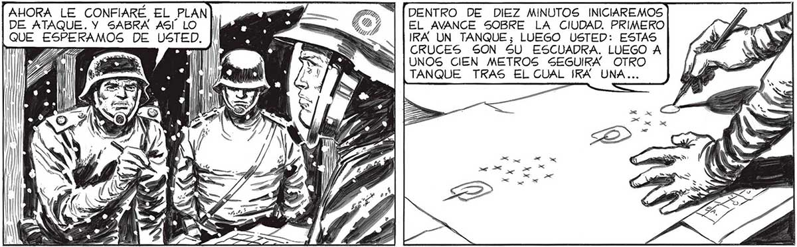

86 MÍUENCANTADO, AMIGO SALVO. EL TENIENTE CONI ME HA DICHO QUE USTED SABE MANEJAR A LOS ESTE ES LA INSTRUCCION E DURO MUY PO- GECUENCIA HE RESUELTO COR LA VOZ HOMBRES. ADEMAS, EL PROFE- | | CONFIARLE EL MANDO DE DE FAVALLI d SOR FAVALLI DICE QUE... TODOS LOS MILICIANOS. ME LLAMO. ES UNOS CUARENTA EN TOCRUCÉ AL TRO- AÑ TAL. TE ENTRE S=> XX AQUELLA CON- MES FUSION DE TAN QUES, CAMIONES, | SOLDADOS, MORTEROS. Y ME ENCONTRÉ ANTE EL IMPROVISADO PUES: R TO DE COMANDO. lb y AHORA LE CONFIARÉ EL PLAN DE ATAQUE. Y SABRA ASI LO | QUE ESPERAMOS DE USTED, TRAGUÉ SALIVA. UNA HORA ANTES NO ERA NADA. DE PRONTO FUI CABO. AHORA, RESULTABA TENIENTE... fá [SE ASCENDÍA RAPIDO ALLE. | DS Y UN ES ea MAS ..GUBITO ASCENSO. DE TODOS LOS EFECTIVOS DE QUE DIGPONÍA EL MAYOR, «| MIS MILICIANOS Y yO ÉRAMOS LOS MENOS IMPRESCINDIBLES. NOS ENVIA... SECCION DE SOLDADOS CON UN TELÉFONO PORTATIL: ELLOS NOS IRAN INFORMANDO EL PROGKESO DEL . AVANCE. NOSOTROS SEGUIREMOS A): Q SES > UN SIMPLE SOL: DADO BIEN ADIESTRADO TIENE HOY EL VALOR DE UN GENERAL EN TIEM ¡POS NORMALES | Y ns ZA a A Y . 3 EL INVASOR NOS AE A S TS NIQUILABA. EL MAYOR AHORA Sí COMPRENDÍ LA RAZON DEL... LEYO” EN MI ROSTRO... "PODEMOS FIAR PLENA- | MENTE EN USTED. EN CONNO NOS JUZGUE MAL, SEÑOR SALVO. PERO EN LAS CONDICIONES ACTUALES DEBEMOS SER REALISTAS AL MAXIMO: ÉL CABO MENOS INSTRUIDO ESTABA EN MEJORES CONDICIONES QUE YO. DISCULPE, SEÑOR, ES COSA RESUELTA, PERO YO... TENIENTE SALVO... ÁQUELLO ERA DEMASIADO. UN GURSO DE TRES MESES, DIEZ AÑOS ATRAS, ¡NO CAPACITABA A NADIE PARA ACTUAR COMO OFICIAL SIN NINGUNA OTRA PREPARACION! — | ¿NO ERA MEJOR DAR AQUEL MAN- | DO A CUALQUIER SUBOFICIAL 2 DENTRO DE DIEZ MINUTOS INICIAREMOS EL AVANCE SOBRE LA CIUDAD. PRIMEKO IRA UN TANQUE; LUEGO USTED: ESTAS CRUCES SON 5U ESCUADRA. LUEGO A UNOS CIEN METROS SEGUIRA OTRO TANQUE TRAS EL CUAL ¡KA UNA... YO LE PEDÍ” QUE ME MANDARA A MI. PERO NO QUIERE: CREE QUE MIS CONOCIMIENTOS PUEDEN SERVIR DE ALGO. A DECIRTE LA VERDAD, NO CREO QUE EXISTA YA UN PUESTO MAG PELIGROSO QUE OTROS: EL FIN DE TODOS ES CUESTIÓN DE HORAS, A LO SUMOF 7:
